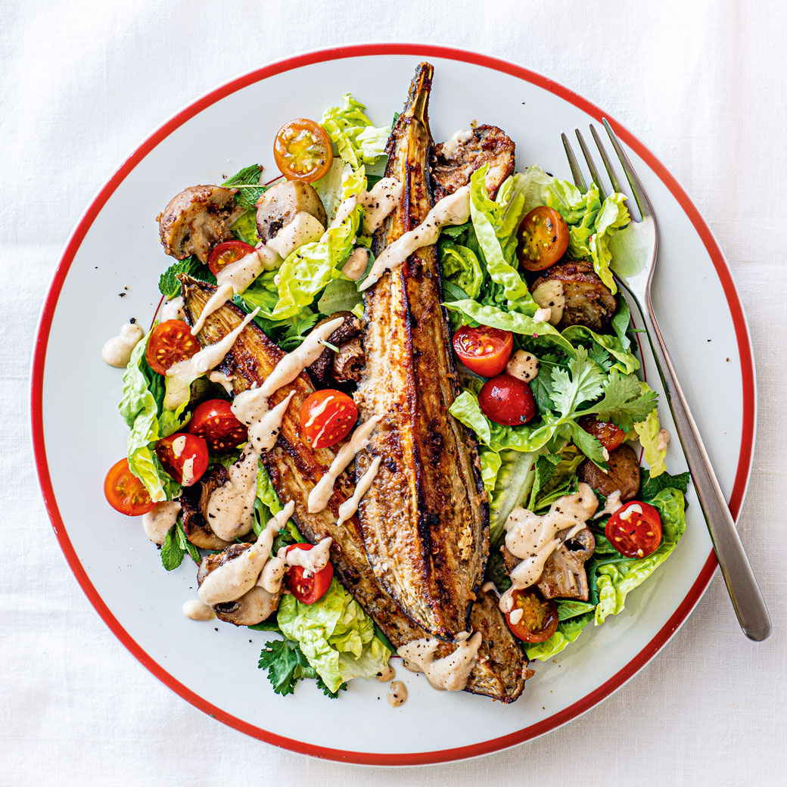

Miso Aubergine and Mushroom Salad
Table of Content
Image¶

 , Source:
, Source: -
Ingredients¶
1. Cherry Tomatoes: 200 gms 2. Pink Himalayan Salt: - 1/2 tsp - 1/2 tsp 3. Aubergine: 1-1.5 Kg(2 Black Large) 4. Brown Chestnut Mushrooms: 400 gms 5. Garlic: 5 cloves 6. Ginger: 2 inch 7. Smooth Peanut Butter: 2 tbsp 8. Miso: 1.5 tsp 9. Red Chilli Flakes: 1/2 tsp 10. Extra Virgin Olive Oil: 2 tbsp 11. Fresh Mint Leaves: 1 bunch 12. Fresh Coriander Leaves: 1 bunch 13. Lettuce: 240 gms(3) 14. Coconut Cream: 100 ml 15. Fresh Lemon Juice: 1 tbsp -
Cookwares¶
- Grater
- Bowl
- Knife
- Large Baking Tray
- Plates
-
Steps¶
- Preheat the oven to 200°C.
- Using knife, cut cherry tomatoes (200 gms) into halves.
- Put the cut tomatoes in a sieve over a bowl, sprinkle with Pink Himalayan Salt (1/2 tsp) and let it stand for 30 minutes.
- Using knife slice each aubergine (1-1.5 Kg(2 Black Large)) into three parts and place it on a large baking tray.
- Now wash and add brown chestnut mushrooms (400 gms), remove stalk to the large baking tray.
- Using a grater, grate garlic (5 cloves), ginger (2 inch) in a bowl and add Pink Himalayan Salt (1/2 tsp).
- Mix in smooth peanut butter (2 tbsp), miso (1.5 tsp), red chilli flakes (1/2 tsp) and extra virgin olive oil (2 tbsp).
- Take half of the above mixed paste and rub it on mushrooms and cut aubergine in large baking tray.
- Put the large baking tray in oven to bake for 25 minutes.
- Chop fresh mint leaves (1 bunch), fresh coriander leaves (1 bunch) and lettuce (240 gms(3)) using knife.
- Add these to the remaining mix in the bowl
- Now add coconut cream (100 ml), fresh lemon juice (1 tbsp) and liquid left by standing tomatoes and mix well.
- Divide the lettuce and tomatoes between 4 plates.
- Top with the roasted aubergine and mushroom from the baking tray.
- Drizzle over the creamy peanut-coconut sauce.
-
Process¶
Nutritional Info¶
Calculated Net Carb Info (Total Net Carbs for entire dish: 68.12)
| Ingredient | Amount | Recipe Unit | Conversion Factor | Amount used in Recipe(gms) | Net_carb/100gms | Source | Calculated Net Carb in recipe |
|---|---|---|---|---|---|---|---|
| Cherry Tomatoes | 200 | GMS | 1.0 | 200.0 | 4.64 | NCCDB | 9.28 |
| Pink Himalayan Salt | 1/2 | TSP | 5.0 | 2.5 | 0.0 | NCCDB | 0.0 |
| Pink Himalayan Salt | 1/2 | TSP | 5.0 | 2.5 | 0.0 | NCCDB | 0.0 |
| Aubergine | 1-1.5 | KG | 1000.0 | 1500.0 | 2.2 | UKDB | 33.0 |
| Brown Chestnut Mushrooms | 400 | GMS | 1.0 | 400.0 | 2.0 | LABEL | 8.0 |
| Garlic | 5 | CLOVES | 3.0 | 15.0 | 16.3 | UKDB | 2.44 |
| Ginger | 2 | INCH | 6.0 | 12.0 | 8.1 | UKDB | 0.97 |
| Smooth Peanut Butter | 2 | TBSP | 15.0 | 30.0 | 16.6 | NCCDB | 4.98 |
| Miso | 1.5 | TSP | 5.0 | 7.5 | 19.0 | LABEL | 1.42 |
| Red Chilli Flakes | 1/2 | TSP | 5.0 | 2.5 | 22.5 | LABEL | 0.56 |
| Extra Virgin Olive Oil | 2 | TBSP | 15.0 | 30.0 | 0.0 | NCCDB | 0.0 |
| Fresh Mint Leaves | 1 | BUNCH | 30.0 | 30.0 | 2.5 | LABEL | 0.75 |
| Fresh Coriander Leaves | 1 | BUNCH | 30.0 | 30.0 | 1.2 | UKDB | 0.36 |
| Lettuce | 240 | GMS | 1.0 | 240.0 | 1.3 | LABEL | 3.12 |
| Coconut Cream | 100 | ML | 1.0 | 100.0 | 3.0 | LABEL | 3.0 |
| Fresh Lemon Juice | 1 | TBSP | 15.0 | 15.0 | 1.6 | UKDB | 0.24 |
| Grand Total | - | - | - | - | - | - | 68.12 |
Recipe in Cooklang
>> Serving Size: 4 portion
>> Cooking Time: 25 minutes (Prep Time - 45 minutes)
>> Category: Japanese
>> Type: Vegetarian
>> Source: https://www.ocado.com/webshop/recipe/Miso-Aubergine-and-Mushroom-Salad-/232096
>> Image: recipe_009_Miso_Aubergine_and_Mushroom_Salad.jpg
>> Image-Caption: Miso Aubergine and Mushroom Salad (image from source recipe)
Preheat the oven to 200°C.
Using #knife{}, cut @cherry tomatoes{200%gms} into halves.
Put the cut tomatoes in a sieve over a bowl, sprinkle with @Pink Himalayan Salt{1/2%tsp} and let it stand for ~{30%minutes}.
Using #knife{} slice each @aubergine{1-1.5%Kg(2 Black Large)} into three parts and place it on a #large baking tray{}.
Now wash and add @brown chestnut mushrooms{400%gms}, remove stalk to the #large baking tray{}.
Using a #grater{}, grate @garlic{5%cloves}, @ginger{2%inch} in a #bowl{} and add @Pink Himalayan Salt{1/2%tsp}.
Mix in @smooth peanut butter{2%tbsp}, @miso{1.5%tsp}, @red chilli flakes{1/2%tsp} and @extra virgin olive oil{2%tbsp}.
Take half of the above mixed paste and rub it on mushrooms and cut aubergine in #large baking tray{}.
Put the #large baking tray{} in oven to bake for ~{25%minutes}.
Chop @fresh mint leaves{1%bunch}, @fresh coriander leaves{1%bunch} and @lettuce{240%gms(3)} using #knife{}.
Add these to the remaining mix in the #bowl{}
Now add @coconut cream{100%ml}, @fresh lemon juice{1%tbsp} and liquid left by standing tomatoes and mix well.
Divide the lettuce and tomatoes between 4 #plates{}.
Top with the roasted aubergine and mushroom from the baking tray.
Drizzle over the creamy peanut-coconut sauce.